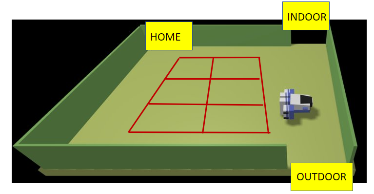

Introduction
Requirements
Automated Car-Parking
A company intends to build an automating parking service composed of a set of elements:- A software system, named ParkManagerService, that implements the required automation functions.
- A DDR robot working as a transport trolley, that is intially situated in its home location. The transport trolley has the form of a square of side length RD.
- A parking-area is an empty room that includes;
- an INDOOR to enter the car in the area. Facing the INDOOR, there is a INDOOR-area equipped with a weigthsensor that measures the weigth of the car;
- an OUTDOOR to exit from the parking-area. Just after the OUTDOOR, there is OUTDOOR-area equipped with a outsonar, used to detect the presence of a car. The OUTDOOR-area, once engaded by a car, should be freed within a prefixed interval of time DTFREE;
- a number N (N=6) of parking-slots;
- a thermometer that measures the temperature TA of the area;
- a fan that should be activated when
TA > TMAX , where TMAX is a prefixed value (e.g. 35)
|r, 0, 0, 0, 0, 0, 0, X, |0, 0,
The map includes the positions of the parking-slots (marked above with the symbolX, X, 0, 0, 0, X, |0, 0,X, X, 0, 0, 0, X, |0, 0,X, X, 0, 0, 0, X, |0, 0, 0, 0, 0, 0, 0, X, |X, X, X, X, X, X, X, X,X ) and of the fixed obstacles in the area (the walls marked with the symbol X).
The area marked withX is a sort of 'equipped area' upon which the transport trolley cannot walk. Thus, to get the car in the parking-slot(2,2) , the transport trolley must go in cell(1,2) .
The proper scene for the WEnv is reported in: parkingAreaConfig.js - a parking-manager (an human being) which supervises the state of the parking-area and handles critical situations.
The job of our company is to design, build and deploy the ParkManagerService.
User stories
As a- I intend to use a ParkServiceGUI provided by the ParkManagerService to notify my interest in entering
my auto in the parking-area and to receive as answer the number SLOTNUM of a free parking-slot (1<=SLOTNUM<=6).
SLOTNUM
==0 means that no free slot is available. - If SLOTNUM
>0 , I move my car in front to the INDOOR, get out of the car and afterwards press a CARENTER button on the ParkServiceGUI. Afterwards, the transport trolley takes over my car and moves it from the INDOOR to the selected parking-slot. The ParkServiceGUI will show to me a receipt that includes a (unique) TOKENID, to be used in the car pick up phase.
- I intend to use the ParkServiceGUI to submit the request to pick up my car, by sending the TOKENID previously received.
- Afterwards, the transport trolley takes over my car and moves it from its parking-slot to the OUTDOOR-area.
- I move the car, so to free the OUTDOOR-area.
- I intend to use the ParkServiceStatusGUI provided by the ParkManagerService
to observe the current state of the parking area, including the value TA of the temperature,
the state of the fan and the state of the transport trolley (
idle, working or stopped ). - I intend to stop the transport trolley when
TA > TMAX , activate the fan and wait untilTA < TMAX . At this time, I stop the fan and resume the behavior of the transport trolley. Hopefully, the start/stopof the fan could also be automated by the ParkManagerService, while the start/stopof the transport trolley is always up to me. - I expect that the ParkManagerService sends to me an alarm if it detectes that the OUTDOOR-area has not been cleaned within the DTFREE interval of time.
Requirements
The ParkManagerService should create the ParkServiceGUI (for the client) and the ParkServiceStatusGUI (for the manager) and then perform the following tasks:
acceptIN: accept the request of a client to park the car if there is at least one parking-slot available, select a free slot identified with a unique SLOTNUM.
A request of this type can be elaborated only when theINDOOR-area is free , and the transport trolley is at home or working (not stopped by the manager). If the INDOOR-area is already engaged by a car, the request is not immediately processed (the client could simply wait or could - optionally - receive a proper notice).
- informIN: inform the client about the value of the SLOTNUM. If
- moveToIn: move the transport trolley from its current localtion to the INDOOR ;
- receipt: send to the client a receipt including the value of the TOKENID ;
- moveToSlotIn: move the transport trolley from the INDOOR to the selected parking-slot;
- backToHome: if no other request is present, move the transport trolley to its home location, else acceptIN or acceptOUT.
- moveToHome: if not already at home, move the transport trolley to its home location.
acceptOUT: accept the request of a client to get out the car with TOKENID. A request of this type can be elaborated only when theOUTDOOR-area is free and the transport trolley is at home or working (not stopped by the manager). If the OUTDOOR-area is still engaged by a car, the request is not immediately processed (the client could simply wait or could - optionally - receive a proper notice).- findSlot: deduce the number of the parking slot (CARSLOTNUM) from the TOKENID;
- moveToSlotOut: move the transport trolley from its current localtion to the CARSLOTNUM/parking-slot ;
- moveToOut: move the transport trolley to the OUTDOOR ;
- moveToHome: if no other request is present move the transport trolley to its home location;
else acceptIN or acceptOUT
-
monitor: update the ParkServiceStatusGUI with the required information about the state of the system. -
manage: accept the request of the manager to stop/resume the behavior of the transport trolley.
About the devices
All the sensors (weigthsensor, outsonar, thermometer ) and the fan should be properly simulated by mock-objects or mock-actors.When using a real robot
No further requirement.When available a Raspberry and a sonar
The outsonar could be a real device. We can simulate the presence/absence of a car.When using only the virtual robot or no real sonar available
Consider the new requirement:
authorize : allow a manager to use the ParkServiceStatusGUI only if she/he ownsproper permissions .
Requirement analysis
During a meeting with the client the following definitions are clarified:transport trolley : a DDR robot able to move a car. The car will be loaded on a platform placed behind or in front of the robot.home location : position where the robot starts when the system is started. Located in the upper left corner, facing south.parking-area : the area where the robot can move and the cars can park. People cannot access this area. This area is surrounded by walls, except for an entrance and an exit.indoor-area : area where the car arrive, and the robot can take it. This area is equipped with a weight sonarweightsensor : device that can detect the weight above it.outdoor-area : area where the robot carries a car following a picking request. This area must be cleared by the user within the time DTFREE.outsonar : device capable of detect if the outdoor-area is free or not.parking-slots : places where cars can be parked. The transport trolley cannot transit on these slots.thermometer : device capable of detect the temperature of the parking area.fan : device capable of reducing the temperature of the parking area.map : map of the area, the locations marked with the symbol X represents the walls or the parking slots, the location marked with "r" represents the actual position of the transport trolley.fixed obstacles : the walls. No other obstacles are present in the area.parking-manager : human being which supervises the state of the parking-area and handles critical situations.tokenid : numeric identifier that allows you to refer to the parking number and pickup the car.robot : a device capable of moving by receiving commands via the network, as reported in VirtualRobot2021.html.
stop (of the robot) : when the temperature detected by thermometer is higher then TMAX, the parking manager disables robot operations. If the robot was moving, it will have to stop immediately.start (of the fan) : when the robot has stopped, the parking manager must turn on the fan.stop (of the fan) : when the temperature detected by thermometer is lower then TMAX, the parking manager can turn off the fan.start (of the robot) : when the temperature detected by thermometer is lower then TMAX and the fan is turned off, the parking manager can turn on the robot.parking-area : the area where the robot can move and the cars can park. People cannot access this area. This area is surrounded by walls, except for an entrance and an exit.indoor-area : area where the car arrive, and the robot can take it. This area is equipped with a weight sonar
Refined user story
As a- First I approach the weight sensor with the car. If the weight is adequate for the parking conditions, the number of available spaces will appear on the ParkServiceGUI.
- If there is at least one space, the CAR ENTER button will be enabled.
- Then, I move the car to the indoor area (the area where the robot can load the car and take it into the parking lot).
- I get out of the vehicle and press the CAR ENTER button.
- An alphanumeric TOKENID will appear in the graphical interface, which can be used in the withdrawal phase.
- First of all I enter the TOKENID that I obtained during the parking phase on the ParkServiceGUI.
- I press the RITIRO AUTO button.
- If the robot is engaged in other operations, a message will appear on the screen informing me to wait a few moments. No action is required on my part, because the system automatically queues my request and will handle it as soon as possible.
If the robot is free, the request will be handled immediately and the car will be taken to the outdoor area.
- I intend to use the ParkServiceStatusGUI provided by the ParkManagerService to monitor the status of the parking-area. If I notice that the temperature becomes too high and the alarm is activated, I have to press the STOP ROBOT button. By pressing this button again, I can resume the robot.
- The management of the fan is fully automated and communicates directly with the thermometer which manages its switching on and off. I cannot act manually to turn the fan off or on.
- In case the outdoor is occupied for more than DTFREE time, an alarm will appear on the screen. The alarm will be turned off as soon as the exit is freed.
Map specifications
The client provides us with a map visible in the parkingMap.txt file, and through a figure indicates the approximate position of the elements inside the parking-area. Let's clarify the position of them better:- the HOME is positioned in the cell (0, 0) from which the robot starts.
- the INDOOR-area is positioned in the cell (5, 0) and represents the place where the robot must go to load the car.
- the OUTDOOR-area is positioned in the cell (5, 4) and represents the place where the robot must go to deliver the car to the customer.
- the parking slots are placed in cells (2, 1), (2, 2), (2, 3), (3, 1), (3, 2), (3, 3). In this case the robot must position itself in the cell adjacent to the slot in which it has to insert / withdraw the car. (The robot cannot access one of the cells reserved for the car park.) For example, to park the car in the cell (3, 1) the robot must position itself in the cell (4, 1); it cannot position itself in cell (2, 1) even if it is free.
Problem analysis
Relevant aspects
-
Create a distributed system consisting of six macro-components:
- the (virtual) robot
- the outsonar
- the thermometer
- the fan
- the weight-sensor
- our application (ParkManagerService) which sends commands to the robot in order to satisfy the requirements
- For the construction of the system we use the QAK meta model. The components mentioned above represent actors of the model.
- Each context owns a set
QActors that can interact with components working on a different node, by means of the following protcols:TCP : on the port specified by theContext CoAP : on the port specified by theContext MQTT : using the broker specified in themqttBroker declaration
- In the Wenv, the robot can be controlled via the network in two different ways:
- sending messages to port 8090 with HTTP POST protocol
- sending messages to port 8091 using a websocket
-
In reference to the communication with the WEnv you can rely on the BasicRobot2021 project which allows you to issue commands directly via qak. More information can be found here.
The WEnv uses a request response model, however for some features of the application it could be convenient to use a dispatch type communication.
Logical architecture

ParkManagerService <-> ParkServiceGUI: The ParkManagerService communicates with the Client thanks to the ParkServiceGUI actor. The relationship between these two actors concerns the phase of requesting entry and exit from the car park. It must therefore be able to handle the acceptIN and acceptOUT methods. Once the acceptIN has been received, the ParkManagerService will communicate to the ParkServiceGUI the number of free slots through the informIN status. The user story provided by the client specifies that the customer will be the one to check the free slots and request entry only if the car park is not complete. As a precaution, this control must also be implemented in the ParkManagerService to prevent entry being requested in the event of a complete parking lot.
The ParkManagerService must also provide a receipt to the customer containing a unique TOKEN. It will be the customer's responsibility to keep this TOKEN, as it will be used to collect the car. The TOKEN must be constructed in such a way that it can be traced back to the slot id.ParkManagerService <-> Trolley: The ParkManagerService must also communicate with the Trolley to issue movement commands. The use of the websocket could prove to be more flexible (as it allows to receive information emitted by WEnv in a 'spontaneous' way) and more efficient (as it reduces the protocol hierarchy).
The trolley can be managed with the commands specified at this link.ParkManagerService <-> ParkServiceStatusGUI: The ParkServiceStatusGUI must display the current system status to the ParkingManager. To do this, it communicates with the ParkManagerService and retrieves information on the parking status such as free and occupied slots, fan on or off, displays outdoor and high temperature alarms, robot status (idle, working, stop). The ParkServiceStatusGUI is also equipped with a button that allows the ParkingManager to stop the robot (STOP state) and resume the execution of the robot.ParkManagerService <-> Sensors: The ParkManagerService receives information on the parking status from the sensors (outsonar, thermometer, weightsensor). Once received, this information will be communicated to the ParkServiceStatusGUI. The sensors will send an event or a message only in the event of a change of state; in this way the number of messages exchanged will be reduced with a saving of bandwidth. A cons of this decision is that the sensor will have to keep track of the previous state and check each time to see if the state has changed. However, the pros are more prominent.
ParkManagerService state diagram

If at a particular time the acceptin or acceptout cannot be executed (for example for occupied indoors or outdoors) the requests are put on hold.
Additional features described by the client are:
manage: that accepts the manager's requests to stop and resume the robot. In this case the robot must restart from the state in which it was stopped.monitor: which transmits information to the ParkManagerServiceGUI for updating the parameters.
ParkManagerService GUI example
A possible example of a graphical interface that can be used for the ParkingManager is the following:
- the temperature in degrees and the signal if this exceeds the TMAX threshold (in this case the circle turns red)
- the status of the fan represented by a CheckBox (when selected the fan is running). The activation of the fan is not the responsibility of the Manager, but will be managed automatically, therefore the Checkbox cannot be selected.
- the outdoor alarm: if the output is not released within the DTFREE time, the circle turns red.
- the status of the trolley: represented by a text field that can contain the 3 robot states (IDLE; WORKING; STOP)
ParkService GUI example
A possible example of a graphical interface that can be used by the users is the following:
- the number of free seats (updated when the car is positioned on the weightsensor)
- the CARENTER button which will be active only in case of free seats and adequate weight.
- the token issued when parking is successful.
- a text area in which to enter the TOKEN ID.
- a button to declare the willingness to collect the car.
Problems identified
Moving the car from the indoor area
When the robot picks up the car from the indoor, the car is outside the walls. In this case, particular attention must be paid during handling. A rotation of the robot in this position could cause the machine to hit the wall. After a meeting with the client, he clarified that this can be overlooked.Weight-sensor
To prevent an object other than a car from entering the parking-area and interfering with the system, it is necessary to establish a threshold below which the entry is not allowed. The value of this threshold will be decided in the following stages.
-
For the management of the weight sensor it is possible to use different communication protocols:
- Interrogate the sensor with a response request, each time the CAR ENTER button is pressed.
Pro: the sensor is interrogated only when a user really wants to enter the parking lot.
Cons: This solution involves a waste of bandwidth and a slowdown of the system; A user can press the button even if the weight is not adequate by overloading the system. - Continuously interrogate the sensor asking for the weight detected (Polling type communication) and enable the CARENTER button only when the weight is adequate.
Pro: The button is enabled only if the weight is adequate, preventing it from being pressed unnecessarily.
Cons: The continuous interrogation of the sensor results in a strong slowdown of the system and a waste of bandwidth; Furthermore, queries are also carried out when no user wants to access the car park. - Have the sensor send a communication as soon as it detects a significant weight change.
Pro:No waste of bandwidth because the sensor sends a signal only in case of need.Cons: There are no significant cons.
- Interrogate the sensor with a response request, each time the CAR ENTER button is pressed.
Dimensions of the car
To prevent a large car from occupying more than one parking space, it is assumed that all cars entering the parking area have a maximum length RD. So, they occupy only 1 cell of the map.Stop of the robot during operations
In the event that the robot is stopped by the operator during a movement operation, the robot must stop in the position in which it is. When conditions allow, the robot's operations will have to resume where they left off. It is assumed that the customer waits for the robot to resume execution, ending the process.Temperature > TMAX
Considering the automated management of the fan, it is possible that the ParkingManager, for a distraction, forgets to turn off the robot when the temperature is above the TMAX threshold. To avoid damage to the robot, it is advisable to insert an alarm that draws the manager's attention (hopefully visual and audible).User into the car
The specifications provided by the customer do not specify the possibility that a user remains inside the car after pressing the CARENTER button. To avoid this, the button must be placed in a position away from the indoor area. In this way the user is forced to get out of the vehicle to press the button.Token not valid
To prevent a user from entering an invalid token and being able to collect another person's car, a verification system must be in place. The tokens issued must then be stored. Once the car has been picked up, its token will need to be deleted or disabled.
SPRINT 1
As a first sprint we have introduced the following simplifications:no connection with the robot : the robot will not make any movement. The actions will be simulated considering a waiting time.GUI not implemented : The parking manager and parking service gui will not be implemented in this phase.no thermometer and fan: these two devices are not considered during this phase
Logical Architecture
The diagram below concerns only the components considered in this SPRINT, and not the entire final system.Our system, as a first sprint, is composed by these actor:
|
 |
In the figure shown above we specify that:
- a dispatch or an event can be used for communication between
weightsensor (or outsonar) andparkmanagerservice . A request - response communication is not necessary or indicated, as there is no need to have a response. The use of the latter protocol would involve a consumption of bandwidth. - for the communication between the
client and theparkmanagerservice , a request - response protocol is instead necessary because the client needs to receive responses to the requests it sends to the parkmanagerservice, such as the reception of the token after pressing the car enter button.
Executable model - Sprint 1
A first executable model is available in the parcheggio.qak file.This model represents a single customer requesting entry and exit of the car from the parking lot.
The model is compliant with the specifications indicated in the diagram shown above, with the addition of the timeout state which allows to detect the occupation of the output for more than DTFREE time.
In this model, as indicated in the chapter Problems Identified, the acceptin is invoked directly by the weightsensor, and subsequent communications directly involve the client.
b To simulate the behavior of the sonar, the parkmanagerservice warns the outsonar actor that a car has been placed outdoors. Once this message is received, the outsonar starts a timer. If the timer reaches the DTFREE time, it sends an alarm to the parkmanagerservice. When the car is removed, the client sends an event to the sonar which will take care of communicating the free outdoor status to the parkmanagerservice.
SPRINT 2
As a second sprint we have introduced the following simplifications:limited connection with the robot : The robot performs only one movement to reach the indoor area starting from the home position. All other movements are not managed at this stage and will be simulated considering a waiting time.ParkServiceGUI not implemented : The parking service gui will not be implemented in this phase.
- Addition of the ParkServiceStatusGUI.
- Addition of thermometer and fan and respective communications (alarms, ...)
Logical Architecture
The diagram below concerns only the components considered in this SPRINT, and not the entire final system.Compared to the previous representation, the messages used in the communication have been specified.
Our system, as a second sprint, includes the following actors (in addition to the previous ones):
|
 |
In the figure shown above we specify that:
- a dispatch or an event can be used for communication between
weightsensor (or outsonar) andparkmanagerservice . A request - response communication is not necessary or indicated, as there is no need to have a response. The use of the latter protocol would involve a consumption of bandwidth. - for the communication between the
client and theparkmanagerservice , a request - response protocol is instead necessary because the client needs to receive responses to the requests it sends to the parkmanagerservice, such as the reception of the token after pressing the car enter button. - events or dispatches can be used for communication between
parkservicestatusGUI andparkmanagerservice . It is preferable to use events for the buttons available on the GUI and dispatch for the GUI to receive system status information. The start and stop events shown in the figure are sent to the parkmanagerservice. - the
fan can emit an event or a dispatch. The figure shows an event that is sent to theparkservicestatusGUI to communicate the status change of the fan. - the
thermometer can send an event or a dispatch. The figure shows the high temperature events and the temperature change update sent to theparkservicestatusGUI .
- when the
parkmanagerservice receives the event that signals the arrival of a new car from theweightsensor , it sends a dispatch (or event) to theclient containing the number of slots available. - the
basicrobot communicates with theparkmanagerservice by receiving movement commands. These messages are not represented in the figure.
Executable model - Sprint 2
The second executable model is available in the parcheggio.qak file.This executable model is compliant with the sprint 2 specifications indicated in the paragraphs above.
SPRINT 3
As a third sprint we have introduced the following simplifications:limited connection with the robot : The robot performs only some movements to reach the indoor area starting from the home position, and to reach the first slot from the indoor area. All other movements are not managed at this stage and will be simulated considering a waiting time.
- Addition of the ParkServiceGUI.
Logical Architecture
The diagram below concerns only the components considered in this SPRINT, and not the entire final system.Compared to the previous representation, the messages used in the communication have been specified.
Our system, as a third sprint, includes the following actors (in addition to the previous ones):
|
 |
In the figure shown above we specify that:
- The customer uses the
parkserviceGUI .
Executable model - Sprint 3
The third executable model is available in the parcheggio.qak file.This executable model is compliant with the sprint 3 specifications indicated in the paragraphs above.
Test plans
Appropriate test plans were created for the three most important phases of the project, in order to verify the correct functioning of the trolley. the- updating the number of free slots
- sending a formally valid token
- the movement of the robot in the cell corresponding to the token sent
- the repositioning of the trolley in the home position.
Regarding the
- if the outdoor is free, the Acceptout is accepted
- the number of free places is correctly updated
- the robot positions itself correctly in the car collection cell (corresponding to the token)
- the robot positions itself correctly in the outdoor cell
- the robot returns to the home position.
As a
- the correct updating of the robot status in the various steps (IDLE, WORKING, STOP)
- update of the parking status (which spaces are occupied and which are free)
- the reception of the outdoor busy alarm message
- the revocation of the alarm when the outdoor is released.
Project
Workplan
Sprint 1
The first sprint includes:- Parkmanagerservice behavior with only one request (one client).
- Interaction with weightsensor and outsonar.
Sprint 2
The second sprint includes:- Addition of the ParkServiceStatusGUI.
- Addition of thermometer and ventilator and respective communications (alarms, ...)
- A first communication with the robot: the robot starts to follow the paths to reach the indoor area.
Sprint 3
The third sprint includes:- Addition of the ParkServiceGUI
- A first communication with the robot: the robot starts to execute the paths to reach the first slot.
- Addition of the map to track robot location
Sprint 4 (Final)
The final sprint will include the complete project. All functions will be made available and the system will be released.This sprint will be completed and delivered by 23 July.